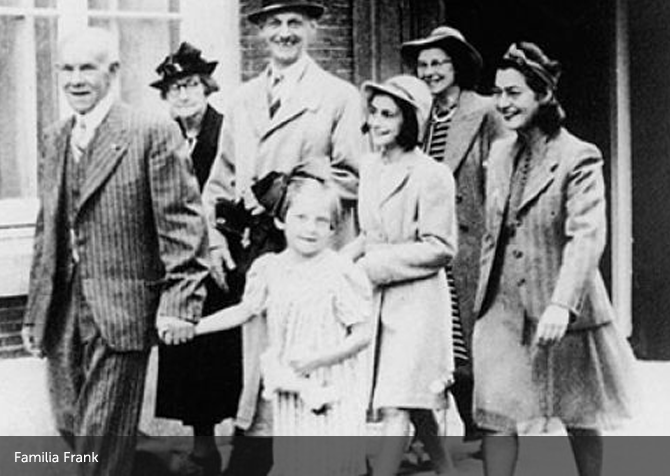

El diario
Viernes, 09 de octubre de 1942.
(...)
“
Muchos de nuestros amigos judíos son poco a poco detenidos por la Gestapo, que no anda con contemplaciones; son transportados en furgones de ganado a Westerbork, al gran campo para judíos,…
…cientos y cientos están obligados a lavarse en un solo cuarto, y faltan los baños. Duermen los unos encima de los otros, amontonados, en cualquier rincón…
…Nosotros no ignoramos que esas pobres gentes serán masacradas. La radio inglesa habla de cámaras de gas.”
El 4 de Agosto de 1944, el escondite fue descubierto.
La familia Frank y el resto de los ocupantes fueron capturados y trasladados al campo de Westerbork...
El 3 de setiembre fueron deportados a Auschwitz.
La madre de Ana murió allí el 6 de enero de 1945.
Margot y Ana , en una operación de evacuación, fueron deportadas a otro campo, Bergen Belsen, en octubre de 1944.
Allí murieron ambas durante una epidemia de tifus entre finales de febrero y principios de marzo de 1945.